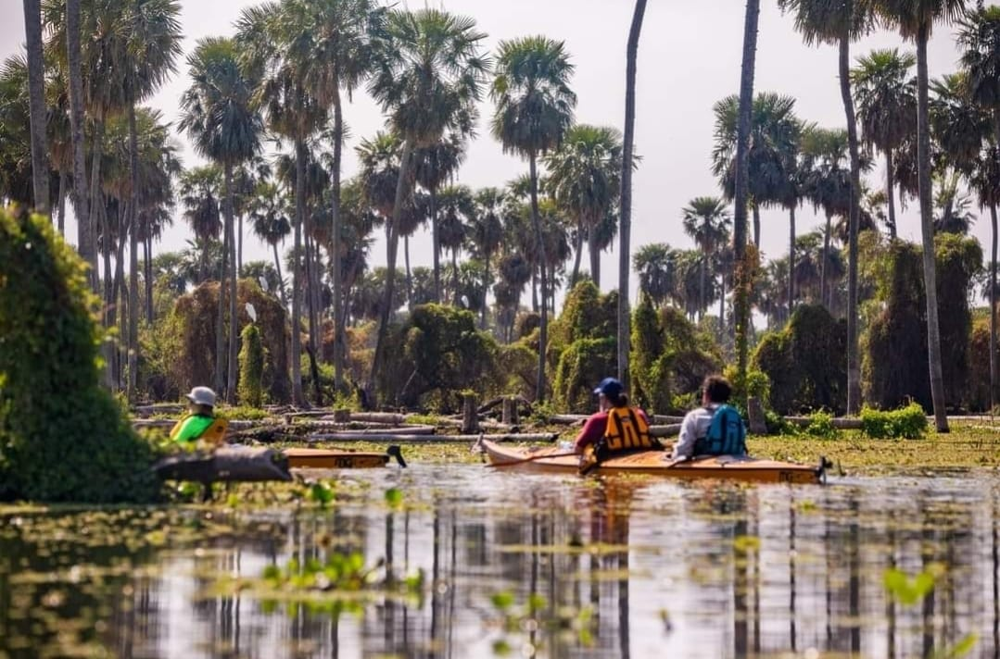
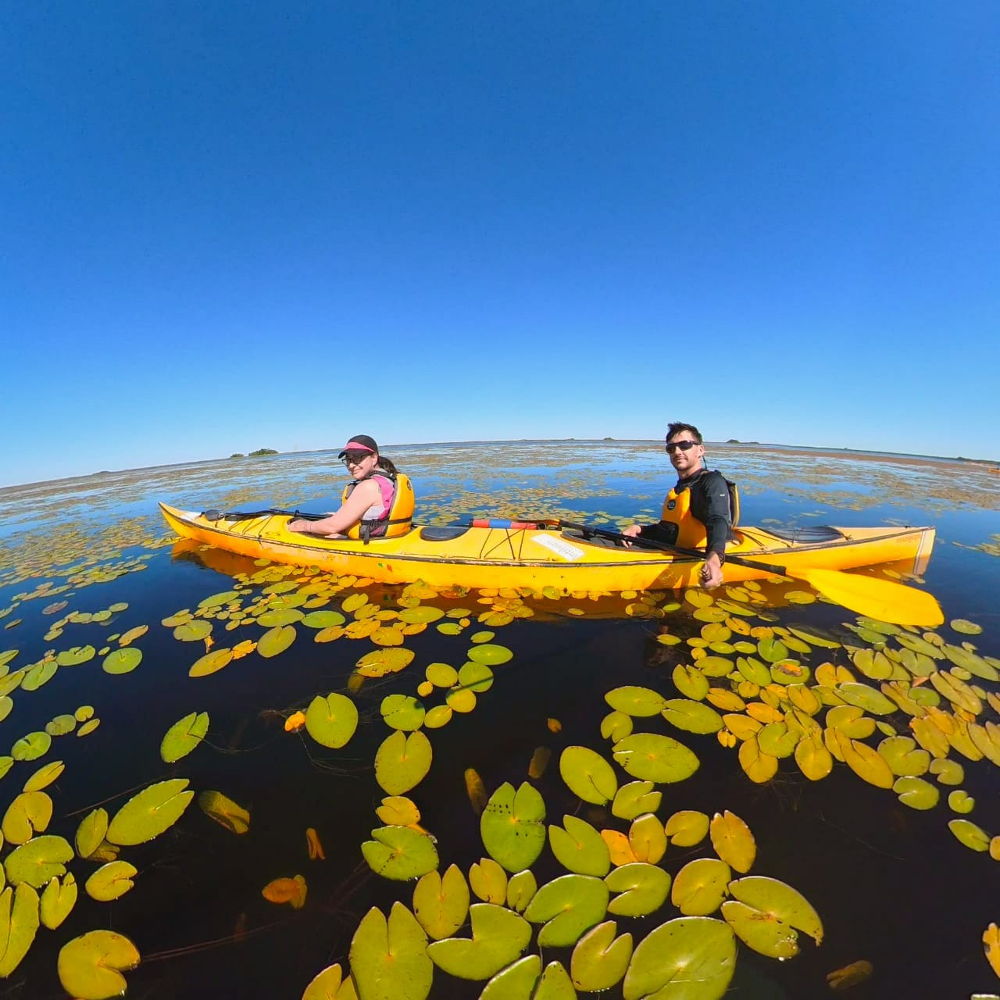
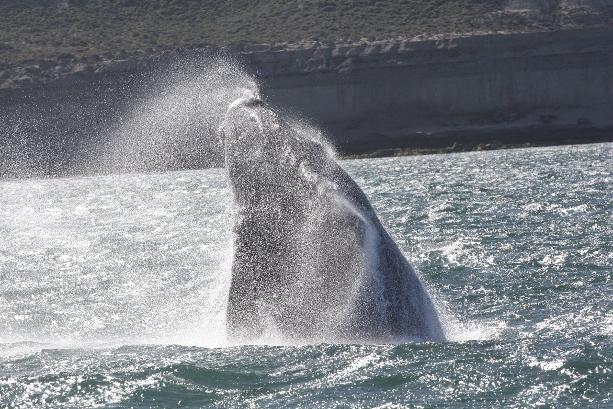
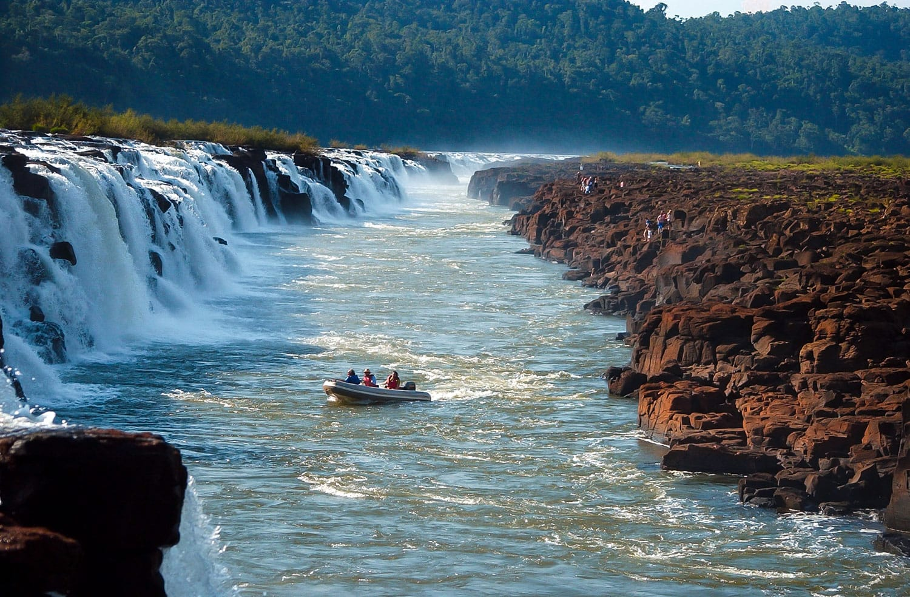
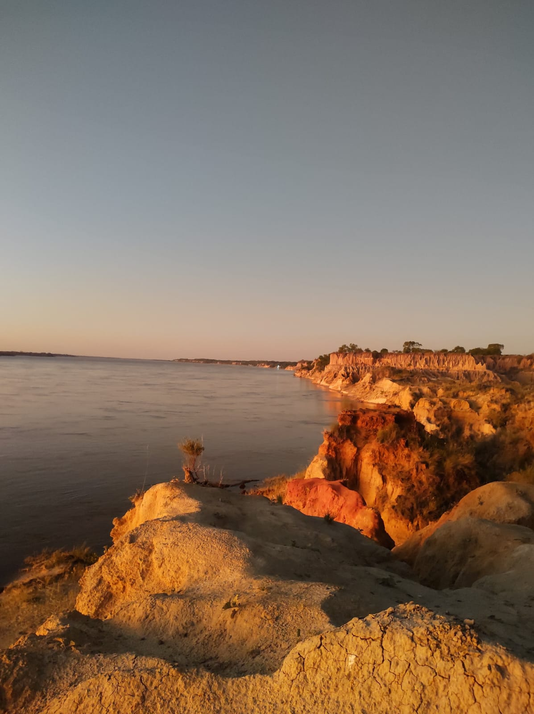
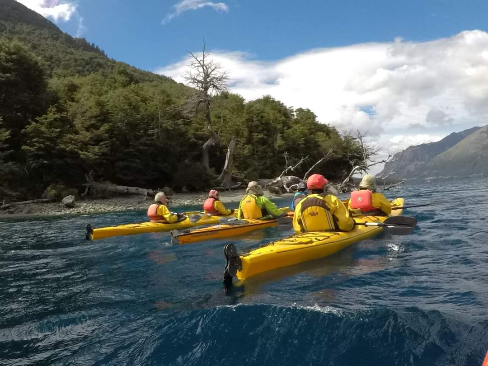

Travesias
A lo largo del año y particularmente en fechas de fines de semana largo, nos vamos de viajes a realizar diferentes expediciones por el país. Entendemos por travesía a toda aquella excursión la cual se realiza a lo largo de dos o más días (tienen pernocte). Las mismas pueden ser en campamentos agrestes como por ejemplo en los arenales del Rio Uruguay, con campings con servicios como en Bariloche, o con todas las comodidades que un complejo de cabañas nos puede dar como en el Delta del Paraná.

Bañado La Estrella-Formosa

Esteros del Iberá-Corrientes

Puerto Madryn-Chubut

Saltos del Moconá-Misiones

Empedrado-Corrientes

Puerto Madryn-Chubut